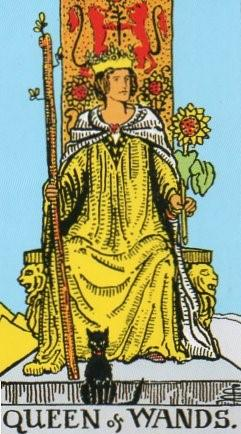
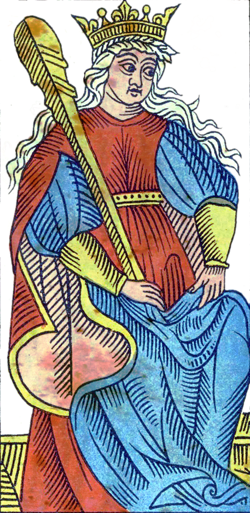
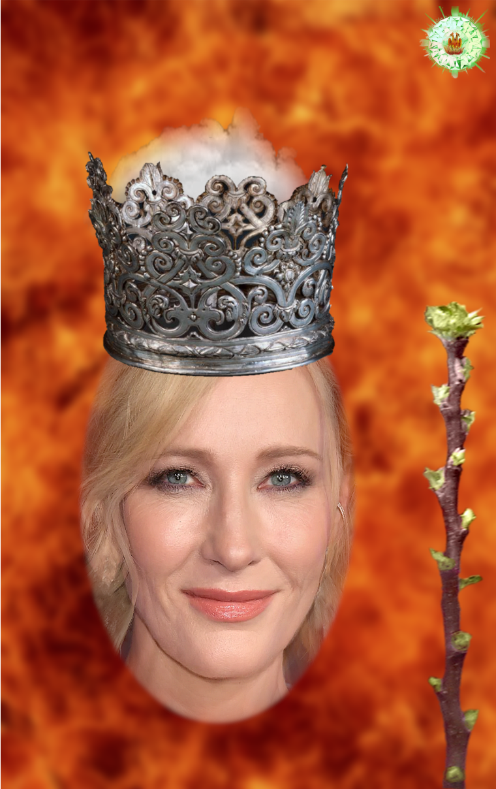
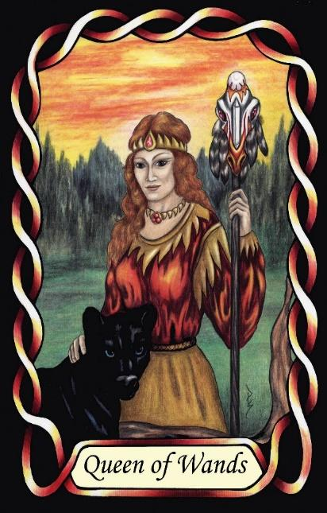

Queen of Wands
The Counsellor (INFJ – NiFe)




Queen |
Idealist: Abstract Collaborative |
||
Action |
|||
Introverted iNtuition Extroverted Feeling |
|||
1.5% of population |
|||
Examples: Cate Blanchette, J. K. Rowling |
|||
Meaning of Life: Finding Core Values |
|||
Astrology: Sagittarius (Female side) |
|||
Queens of Wands are guided by a powerful inner vision. Their introverted intuition gives them a deep sense of purpose and a strong internal compass, allowing them to see underlying patterns in people, situations, and society. They often feel called to help others discover their own direction, values, and meaning.
Although technically introverts, they can appear extroverted when acting on their ideals. Their extroverted feeling gives them empathy, social awareness, and the ability to communicate their insights in ways that resonate with others. They influence not through force, but through guidance, clarity, and moral conviction.
As Idealists in a Fire suit, they combine emotional insight with decisive action. They are not content merely to understand people — they want to help them grow, heal, or transform. Their counsel is often catalytic, pushing others toward self-discovery or toward living more authentically.
They see problems as opportunities for improvement, especially in the realm of human potential. Their focus is on helping individuals align with their deeper values and purpose. This is why the Counsellor archetype fits them so well: they illuminate the path ahead, offering both insight and encouragement.
INFJs often express their influence through writing, teaching, or one-on-one guidance. Their words carry weight because they speak from conviction and from a profound understanding of human nature. They are the quiet Fire of the Idealists — steady, purposeful, and transformative.